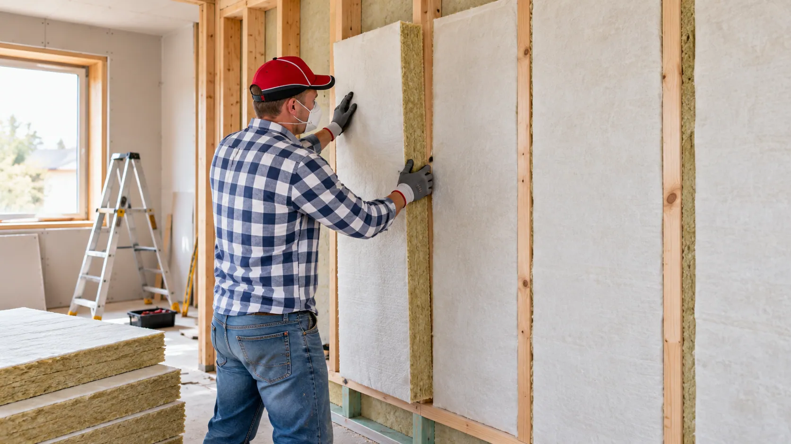
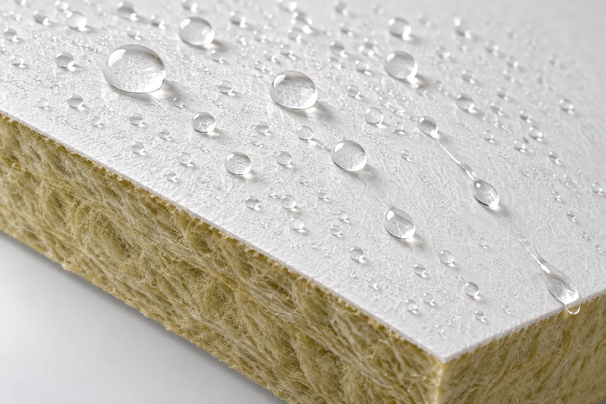

Pitched Roof Insulation
Moisture management and surface durability for insulation installed beneath sloped roofs.
01. Hero Section
Mineral Wool Insulation Board Facers Solution Hub
Improve moisture protection, bonding reliability, and production consistency with application-matched fiberglass coated veil solutions for rock wool and glass wool insulation boards.
GRECHO helps mineral wool board manufacturers address facer-related challenges, from moisture resistance and surface stability to lamination compatibility and efficient production.
Key Advantages:

02. Application Context
Mineral wool insulation boards are widely used in building envelopes where moisture exposure, dimensional stability, and long-term reliability matter.
The right fiberglass coated veil helps protect the insulation surface while supporting compatibility with the board manufacturing process.

Moisture management and surface durability for insulation installed beneath sloped roofs.
Surface protection and dimensional stability for interior and exterior wall insulation assemblies.
Reliable facer adhesion and handling performance for rigid insulation board manufacturing.
Consistent surface properties for insulation boards used in demanding industrial environments.

03. Pain Point Diagnostic
Even when the mineral wool core meets insulation requirements, facer-related issues can affect finished board quality, production efficiency, and long-term performance.
Moisture passing through the facer or accumulating at the board surface can compromise durability and increase the risk of deterioration under damp conditions.
Incompatible coating structures, unsuitable porosity, or uneven adhesive distribution may cause weak bonding, blistering, or facer separation.
Facer deformation during lamination, cutting, or temperature changes can lead to wrinkles, uneven surfaces, and inconsistent finished board appearance.
Variations in roll width, coating uniformity, tensile properties, or handling performance can interrupt production and increase material waste.
04. Facer Direction
GRECHO offers application-matched fiberglass coated veil directions designed to address different production challenges, including moisture resistance, bonding compatibility, and dimensional stability.

Challenge: Moisture Penetration & Surface Deterioration
Mineral wool boards used in roof and wall insulation may encounter moisture during storage, installation, or service. Inadequate surface protection can increase exposure to water.
GRECHO Solution
A moisture-resistant coating formulation helps reduce liquid water penetration through the facer while maintaining compatibility with the intended insulation system.
Review Focus: Water resistance, coating uniformity, moisture exposure conditions, and application compatibility.
Challenge: Weak Adhesion & Facer Delamination
Poor adhesive compatibility or inappropriate facer porosity can result in uneven bonding between the fiberglass facer and mineral wool core.
GRECHO Solution
An application-matched veil structure and coating formulation support adhesive interaction and stable lamination, helping manufacturers achieve more consistent facer-to-core bonding.
Review Focus: Adhesive compatibility, air permeability, surface characteristics, and lamination conditions.
Challenge: Wrinkling, Deformation & Processing Waste
Unstable facer dimensions and inconsistent roll properties may contribute to wrinkles, misalignment, and material waste during continuous board production.
GRECHO Solution
A dimensionally stable fiberglass veil with controlled coating and consistent roll specifications supports smoother processing, more reliable cutting, and improved finished board consistency.
Review Focus: Tensile strength, dimensional stability, roll width, winding quality, and line compatibility.
05. Material Direction Review
Different mineral wool insulation systems require different facer properties. GRECHO helps manufacturers evaluate the right coated fiberglass veil based on moisture exposure, production requirements, and finished board specifications.

For insulation boards requiring improved resistance to liquid water exposure.
For mineral wool lamination processes where consistent facer adhesion is essential.
For continuous board production requiring reliable handling and surface uniformity.
For selected insulation systems requiring additional tensile strength and handling support.
06. Performance Review Factors
GRECHO works with insulation manufacturers, technical engineers, purchasing teams, and quality managers to identify facer properties that directly affect production and finished board performance.
Review coating performance against liquid water exposure and the intended insulation application.
Evaluate facer surface properties, coating structure, and adhesive compatibility to support consistent bonding.
Assess resistance to deformation, wrinkling, and dimensional changes during production and handling.
Review applicable fire classification documents for the selected facer and complete insulation board system.
Balance moisture resistance, porosity, and coating consistency according to production requirements.
Confirm roll dimensions, winding quality, tensile properties, and compatibility with continuous manufacturing lines.
07. Documentation Support
GRECHO provides technical documentation and sample coordination to help manufacturers evaluate fiberglass coated veil solutions before production qualification.

Public Resource · PRODUCT BRIEF
Introduction to fiberglass coated veil options for mineral wool insulation boards.
Application: Rock Wool / Glass Wool Insulation
Form Submission · BASIC TDS
Basic material specifications including nominal weight, thickness, width, and available performance properties.
Access: Form Submission
Review Required · FIRE TEST
Available fire-related documentation for selected facer configurations and applicable testing standards.
Review: Product and Configuration Dependent
Review Required · FULL TDS
Detailed information on selected facer physical properties, moisture performance, and relevant testing conditions.
Scope: Selected Fiberglass Coated Veil
Review Required · SDS / MSDS
Available material safety and handling information for the selected product.
Type: Safety Documentation
Internal Review · COMPLIANCE
Documentation review based on target market, application, and applicable regulatory requirements.
Access: Internal Technical Review
Access Clarification
Document availability depends on the selected material, test configuration, and application. Fire classification and other performance results for individual facers should not be treated as certification of a complete mineral wool insulation system.
Whether you are facing moisture penetration, inconsistent bonding, or production-related facer defects, GRECHO can help review your current material specifications and identify suitable fiberglass coated veil options.
Share your insulation board type, production method, and key technical challenges to start a focused material evaluation.
09. FAQ Preview
Yes. A suitable moisture-resistant coating can help limit liquid water penetration through the facer. However, the overall moisture performance also depends on the mineral wool core, edges, joints, and the complete insulation system.
By matching the coating structure, surface characteristics, and porosity to the adhesive and lamination process, manufacturers can improve bonding consistency. Adhesion should be validated using the actual board construction and processing conditions.
GRECHO can review requirements such as roll width, material weight, coating properties, air permeability, and tensile strength to identify suitable standard or customized material options, subject to technical and production feasibility.
Please share your insulation core type, board dimensions, production method, adhesive system, intended application, and the main problems you want to solve. These details help GRECHO recommend a more relevant material direction.
10. Final CTA
From moisture protection and bonding compatibility to dimensional stability and manufacturing efficiency, GRECHO helps mineral wool board manufacturers find fiberglass coated veil solutions matched to their production requirements.
Share your current challenges and technical specifications. Our team will help identify suitable material directions and coordinate the next steps for evaluation.